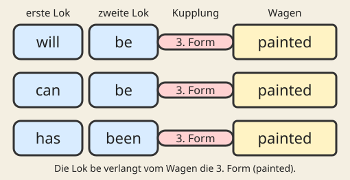

Das Passiv in weiteren Zeiten: has been, will be, can be
Mit einem KI-Tutor lernen
Ein KI-Tutor erklärt dir diese Seite und hilft dir bei den Aufgaben. Wähl deinen Assistenten:
Mit Claude öffnen Mit ChatGPT öffnen Mit Mistral Vibe öffnen
Du nutzt dein eigenes Konto beim Anbieter. Der Assistent ist kein Angebot von lernapps.net: lernapps liefert nur Inhalte und Aufgaben. Die Wahl gilt für alle Seiten, nur auf diesem Gerät.
Der Chat der Organisatoren
Im Chat zum Schulfest tragen Mr Hill, Sophie, Ellie und Amir zusammen, was schon erledigt ist und was noch kommt.
Das kannst du danach: das Passiv auch im present perfect, im will-future und mit Modalverben bilden (It has been sold. It can be done.).
Aufgabe
Lösung
Zwei Loks: will und be. richtige Antwort
Genau. Will ist die erste Lok, be die zweite. Erst danach kommt der Wagen in der dritten Form.
Nur will.
Ohne be fehlt ein Teil. Der Wagen baked braucht be davor.
Nur be.
Be allein sagt noch nichts über die Zeit. Will macht den Satz zur Zukunft.
Vor dem Wagen fahren zwei Loks, will und be. Will zeigt die Zeit, be gehört zum Passiv.
Mehr dazu: Lernlandkarte Englisch · Das Passiv in weiteren Zeiten
Der Chat von Donnerstagabend
Mr Hill: Good evening, everybody! Two days to go. How are we doing?
Sophie: Quite well, I think! The posters have been printed, and they have been put up in town. I even saw one at the bakery!
Ellie: And the invitations have been sent to all the parents, too.
Amir: Hmm, the tables haven't been delivered yet. I hope they will be brought tomorrow.
Mr Hill: Don't worry, Amir. The shop promised: they will be brought tomorrow afternoon.
| Englisch | Beispiel · Hinweis | Deutsch |
|---|---|---|
| an invitation | eine Einladung | |
| deliver | The postman delivers letters every morning. Der Briefträger liefert jeden Morgen die Briefe. | liefern |
| put up | We put up a picture in the hall. Wir hängen ein Bild im Flur auf. | aufhängen |
| promise | versprechen |
Aufgabe
Lösung
Richtige Antwort: Die Aussage stimmt nicht.
Amir schreibt, dass die Tische noch nicht geliefert worden sind.
Mehr dazu: Lernlandkarte Englisch · Das Passiv in weiteren Zeiten
Ellie: What about the cakes? The cakes will be baked on Friday evening, my mum says.
Sophie: Great! And the lemonade can be bought at the shop on Friday afternoon. I can do that after school.
Amir: Has the music been checked yet? The speakers must be tested before the fair.
Mr Hill: Good point. They will be tested on Friday, too. And the prizes should be wrapped before Saturday.
| Englisch | Beispiel · Hinweis | Deutsch |
|---|---|---|
| a speaker | ein Lautsprecher | |
| test | Our teacher tests the microphone first. Unser Lehrer probiert zuerst das Mikrofon aus. | testen, ausprobieren |
| wrap | I wrapped the present in blue paper. Ich habe das Geschenk in blaues Papier eingepackt. | einpacken |
Aufgabe
Lösung
Die Lautsprecher. richtige Antwort
Amir schreibt, dass die Lautsprecher vor dem Fest getestet werden müssen.
Die Kuchen.
Die Kuchen werden gebacken, nicht getestet.
Die Plakate.
Die Plakate sind schon gedruckt und aufgehängt.
Die Lautsprecher müssen vor dem Fest getestet werden.
Mehr dazu: Lernlandkarte Englisch · Das Passiv in weiteren Zeiten
Sophie: I can wrap them tonight. Who will open the doors on Saturday?
Mr Hill: I will, at ten o'clock. But please come at nine: the hall can't be opened before that, the caretaker says.
Amir: Perfect, thank you! Now I feel much better.
Ellie: See you on Saturday! :)
| Englisch | Deutsch |
|---|---|
| a caretaker | der Hausmeister |
| wrap | einpacken, einwickeln |
Verstehen, belegen, meinen
Aufgabe
Lösung
Die Plakate sind gedruckt. richtige Antwort
Sophie schreibt, dass die Plakate gedruckt und in der Stadt aufgehängt worden sind.
Die Kuchen sind gebacken.
Die Kuchen werden erst am Freitagabend gebacken.
Die Lautsprecher sind getestet.
Die Lautsprecher werden erst am Freitag getestet.
Schon erledigt sind die Plakate. Kuchen und Lautsprecher kommen erst am Freitag dran.
Mehr dazu: Lernlandkarte Englisch · Das Passiv in weiteren Zeiten
Aufgabe
Lösung
The hall can't be opened before that. richtige Antwort
Can't be opened heißt „kann nicht geöffnet werden“, before that heißt „vorher“.
I will, at ten o'clock.
Dieser Satz sagt, wann Mr Hill die Türen öffnet, und nicht, dass die Halle vorher geschlossen bleibt.
The tables haven't been delivered yet.
Dieser Satz sagt, dass die Tische noch nicht da sind, und sagt nichts über die Halle.
Can't be opened sagt, dass die Halle vor der genannten Zeit nicht geöffnet werden kann.
Mehr dazu: Lernlandkarte Englisch · Das Passiv in weiteren Zeiten
Offene Aufgabe
Stell dir vor, du organisierst das Schulfest. Was muss nach deiner Meinung unbedingt vorher erledigt sein? Schreibe zwei bis drei Sätze auf Deutsch oder Englisch und nenne einen Grund.
Eine gute Antwort enthält:
- Eine klare Aussage, was vorher erledigt sein muss. (Form)
- Ein Grund für die Meinung. (Form)
Lösung
Die Einladungen müssen vorher verschickt sein, weil sonst niemand weiß, wann das Fest ist.
Be passt in jede Zeit
Auf der letzten Seite hast du is made und was made gelernt. Das Passiv geht in jede Zeit, denn be passt hinter will, hinter can, must und should und hinter has oder have. Dafür fährt eine erste Lok vorweg (will, can, has) und zeigt die Zeit. Die Kupplung bleibt dieselbe: Die Lok be (oder been) verlangt vom Wagen die dritte Form.

Die erste Lok wechselt, dahinter folgen be oder been, die Kupplung 3. Form und der Wagen in der dritten Form.
Quelle: eigene Zeichnung. Lizenz: CC-BY-4.0.| Zeit | Beispiel | Bauplan |
|---|---|---|
| present perfect | The fence has been painted. | has/have been + 3. Form |
| will-future | The fence will be painted. | will be + 3. Form |
| Modalverb | The fence can be painted. | can/must/should be + 3. Form |
Merke
Hinter has und have steht been, hinter will und den Modalverben steht be. Modalverben bekommen nie ein -s und nie to: must be, nicht must to be.
Die Verneinung geht über die erste Lok: hasn't been, won't be, can't be. Bei Fragen rückt die erste Lok nach vorn: Has the shop been closed? Will the shop be closed? Can the shop be closed?
Im present perfect passen already (schon) und yet (noch nicht, bisher): The shop has already been closed. The shop hasn't been closed yet.
Übung
Aufgabe
Lösung
Richtige Antwort: Die Karten sind schon verkauft worden. – The tickets have already been sold.; Der Raum wird morgen geputzt werden. – The room will be cleaned tomorrow.; Das Fenster kann nicht geöffnet werden. – The window can't be opened.
Hinter has und have steht been, hinter will und can steht be. Der Wagen fährt immer in der dritten Form.
Mehr dazu: Lernlandkarte Englisch · Das Passiv in weiteren Zeiten
Aufgabe
Welche Form gehört in die Lücke?
Tipp
Prüfe zwei Dinge: Welche erste Lok steht vorn (has, must, will)? Hinter has und have folgt been, hinter will und den Modalverben folgt be. Und fährt der Wagen in der dritten Form, ohne -ed bei unregelmäßigen Verben wie draw, do, find?
- Das Bild ist schon gezeichnet worden. → The picture has already ….
- Die Hausaufgaben müssen heute gemacht werden. → The homework must … today.
- Das Spiel wird am Sonntag gespielt werden. → The game … on Sunday.
- Der Hund ist noch nicht gefunden worden. → The dog hasn't … yet.
Lösung
- The picture has already been drawn.
- The homework must be done today.
- The game will be played on Sunday.
- The dog hasn't been found yet.
Hinter has steht been, hinter must und will steht be. Der Wagen fährt immer in der dritten Form.
Aufgabe
Lösung
Richtige Antwort: 1. The, 2. tickets, 3. must, 4. be, 5. shown, 6. at, 7. the, 8. door.
Erst kommt, was getan wird (The tickets), dann die Lok must, dann be, dann der Wagen shown in der dritten Form.
Mehr dazu: Lernlandkarte Englisch · Das Passiv in weiteren Zeiten
Aufgabe
Dreh den Satz um: Schreibe ihn im Passiv. Den Täter darfst du weglassen.
- Ellie has made the list.
- They will build the stage here.
- You must carry the boxes.
Lösung
- The list has been made by Ellie. (auch richtig: The list has been made.)
- The stage will be built here.
- The boxes must be carried.
Aufgabe
Schreibe den Satz im Passiv. Er bleibt verneint. Du darfst n't oder not benutzen.
- They haven't repaired the stage yet.
- They won't open the gates before nine.
Lösung
- The stage hasn't been repaired yet. (auch richtig: The stage has not been repaired yet.)
- The gates won't be opened before nine. (auch richtig: The gates will not be opened before nine.)
Aufgabe
Hör zu und schreibe, was du hörst.
- KI
- KI
- KI
Lösung
- The windows have been washed this morning.
- Your bags will be taken to your room.
- Nothing should be left on the floor.
Selbst sagen und schreiben
Aufgabe
Hör zu, sprich nach und nimm dich auf. Vergleiche dann mit dem Original.
Tipp
Hör zuerst zu, sprich dann nach und vergleiche.
- How many people have been invited?KI
- Everything will be explained tomorrow.KI
- Phones mustn't be used in the test.KI
Zum Aufnehmen braucht diese Aufgabe JavaScript. Die Beispiele kannst du auch ohne anhören.
Lösung
- How many people have been invited?
- Everything will be explained tomorrow.
- Phones mustn't be used in the test.
Offene Aufgabe
Schreibe eine kurze Nachricht an Mr Hill über ein Fest in deiner Klasse (es darf erfunden sein). Benutze drei Sätze im Passiv: einen mit has been oder have been, einen mit will be und einen mit can be oder must be.
Eine gute Antwort enthält:
Lösung
The invitations have been written. The food will be bought on Friday. The room must be cleaned before the party.
Wie es weitergeht
Nach dem Fest schreibt Sophie Tagebuch darüber, was ihr an einem Tag geschenkt, gezeigt und erzählt wurde. Dort steht nicht mehr die Sache vorn, sondern Sophie selbst: I was given a scarf. Auf der nächsten Seite liest du das Tagebuch und lernst, wie dieses Passiv mit zwei Objekten funktioniert.
Fehler gefunden oder eine Idee für diese App?